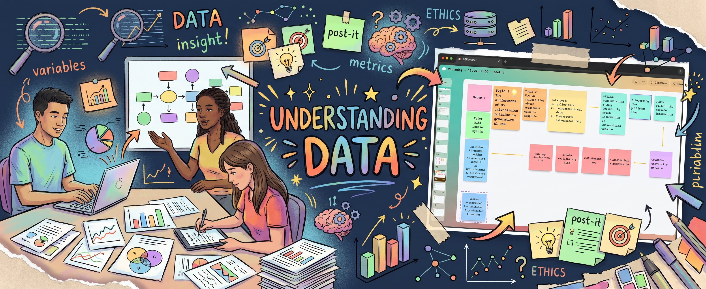

Week 4

Schedule for this week:
Workshop 2h + Lecture 1h
Workshop: Understanding Data
In Week 4, the workshop focused on data collection and data analysis. We learned about the basic concepts of data, datasets and data collection. The main task was to think about how to create a dataset to explore students' use of generative AI tools in their studies.
During the workshop, I worked with my group to explore the differences in generative AI policies across five UK universities. We were particularly interested in how universities regulate the use of AI in academic work. We decided to collect information from university websites, focusing on areas such as AI grammar checking, AI-generated content, AI brainstorming and AI disclosure requirements.
We also discussed how to collect data ethically. For example, we agreed to use only publicly available information, record the publication dates of the policies and avoid collecting private information. In addition, we identified some possible data gaps, including institutional bias, data availability and researcher subjectivity. These factors could affect how we understand and compare the policies.
Lecture: Data and Power
In Week 4, the lecture focused on the relationship between data and power. We explored what data is, how it is collected and how it can influence the way we understand the world.
One of the key ideas was that data is not neutral or completely objective. The information we collect depends on what we choose to include and how we classify it. For example, social media platforms collect different types of user information, including personal details, browsing history, interactions and location data. This made me realise how much information digital platforms can collect from our everyday activities.
We also learned about datafication, which refers to the process of turning different aspects of human life into data that can be measured and analysed. Another important concept was data colonialism, which describes how data can be collected and used in ways that create unequal power relationships.